从原理到实战，带你深入掌握 Model Context Protocol
让大模型拥有使用外部工具的能力
MCP（Model Context Protocol，模型上下文协议）是 Anthropic 于 2024 年 11 月发布的一个开放协议。它的核心作用是：让大模型能够使用各类外部工具，比如浏览器、Unity、实时路况查询等。
原视频文件较大（117.8 MB），请前往 B 站观看：
从概念到实战，10 个章节逐步深入
三个核心概念，一个完整流程
Model Context Protocol，模型上下文协议
MCP（Model Context Protocol）是 Anthropic 公司于 2024 年 11 月 25 日发布的一个协议。中文翻译是"模型上下文协议"，但这个名字有点故弄玄虚。
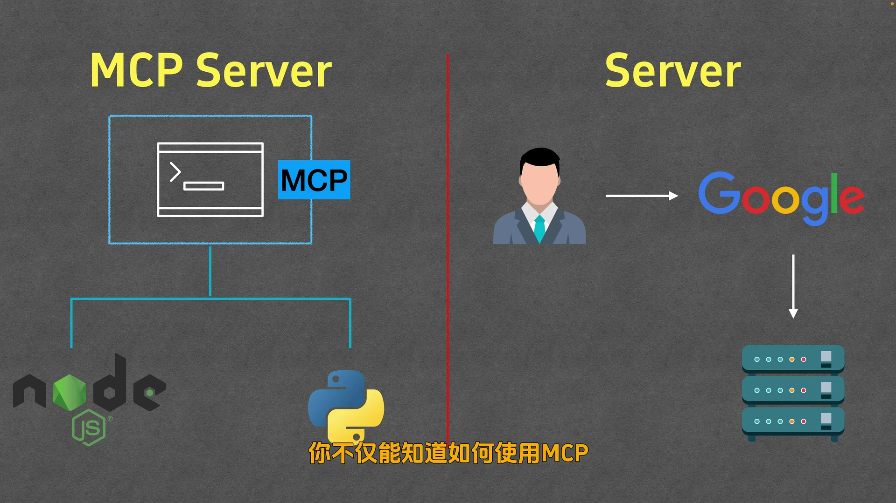
简单来说，MCP 就是能够让大模型更好地使用各类工具的一个协议。比如：
支持 MCP 协议的软件
要想使用 MCP，你需要一个 MCP Host。它本质上就是一个支持 MCP 协议的软件。
常见的 MCP Host 包括：
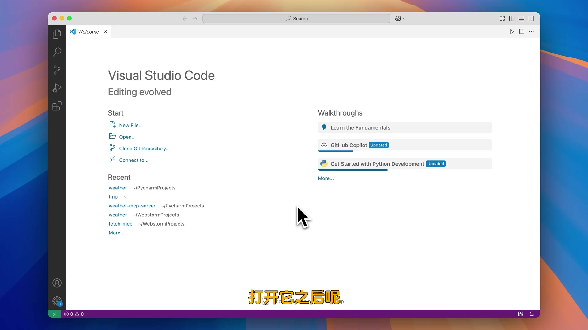
本视频以 Cline 为例。Cline 是 VSCode 的一个插件，安装后可以在 VSCode 侧边栏使用。
让 Cline 能够调用大模型
安装好 Cline 后，需要配置模型。目前对 MCP 支持最好的模型是 Claude 3.7，但价格较贵。如果预算有限，可以选择 DeepSeek V3 0324，效果也不错，价格便宜很多。
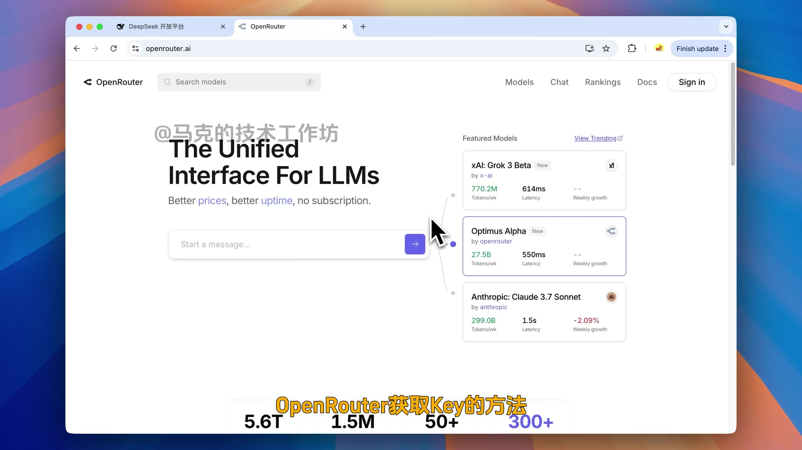
本视频使用 OpenRouter，因为它提供了非常多的模型可供选用，几乎覆盖了市面上所有的主流模型，甚至有些还可以免费用。
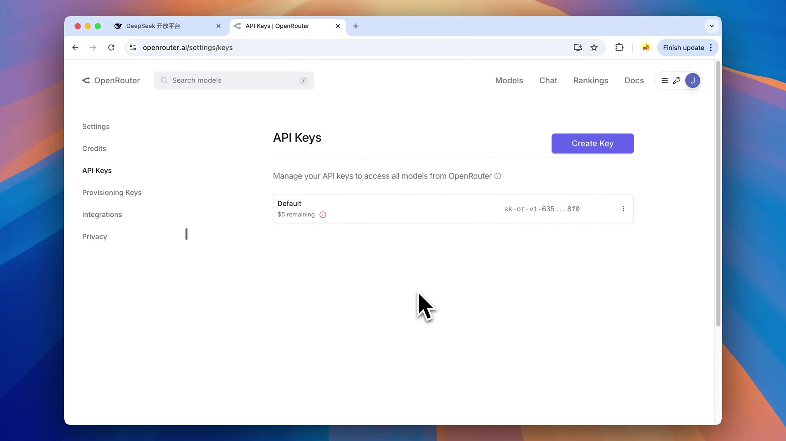
配置完成后，随便问 Cline 一个问题，看它能不能正常回复。能回复就说明配置成功了。
问 Cline 纽约明天的天气
配置好之后，我们试着问 Cline 一个真正的问题：明天纽约的天气怎么样？
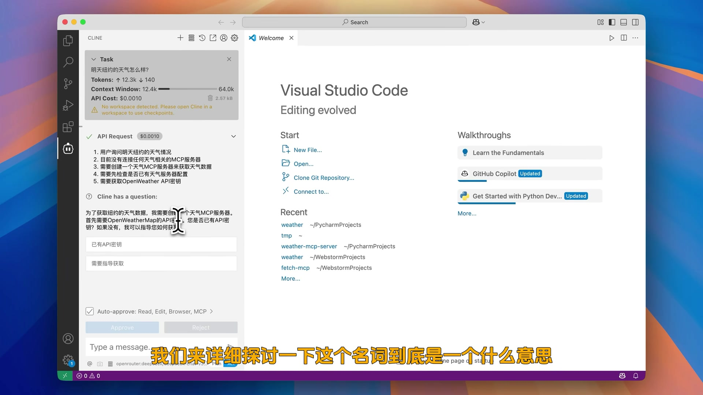
Cline 给我们的建议是：创建一个天气的 MCP 服务器。
这里来了一个新的名词——MCP 服务器（MCP Server）。我们来详细探讨一下这个名词到底是什么意思。
两个核心概念
MCP Server 这个名字听起来好像很高大上，而且好像跟我们传统网络协议里面的 Server 有点联系，似乎是一个远程的服务器。
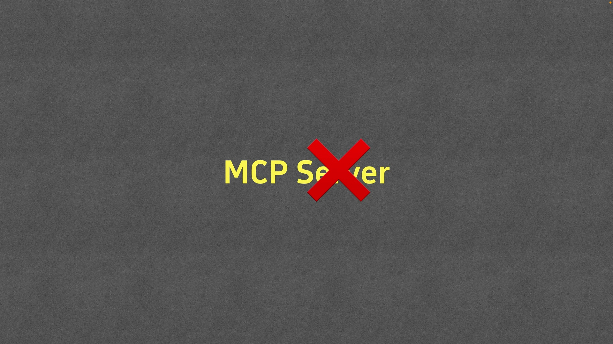
大部分的 MCP Server 都是本地通过 Node 或者 Python 启动的。在使用的过程中可能会连网，也可能不连网。不管连不连网，它都可以叫做 MCP Server。
所以 MCP Server 的名字里面带 Server 这个词，是有一定的误导性的。它本质上就是一个程序，跟你手机上面的应用没有什么太大的区别。
不管是 MCP Server 还是手机应用，它们都内置了一些功能模块来解决你的问题。
比如 iPhone 上面的时钟，内置了四个功能模块：世界时钟、闹钟、秒表、计时器，分别可以给我们解决四个场景的诉求。
而 MCP Server 也内置了一些模块，这些模块在 MCP 领域的专业名词叫做 Tool，翻译成中文就是工具。
比如一个处理天气的 MCP Server，它内部可能会包含两个函数：
我们想查纽约明天的天气，就可以让 Cline 安装这个处理天气的 MCP Server，并且让它使用其中的 GetForecast，就能够拿到纽约明天的天气了。
JSON 配置文件详解
前面我们讲到了 Cline 希望我们安装一个查天气用的 MCP Server。你可以自己查找并安装。Cline 有一个 MCP Server 的市场，就跟我们手机的应用市场有点像。
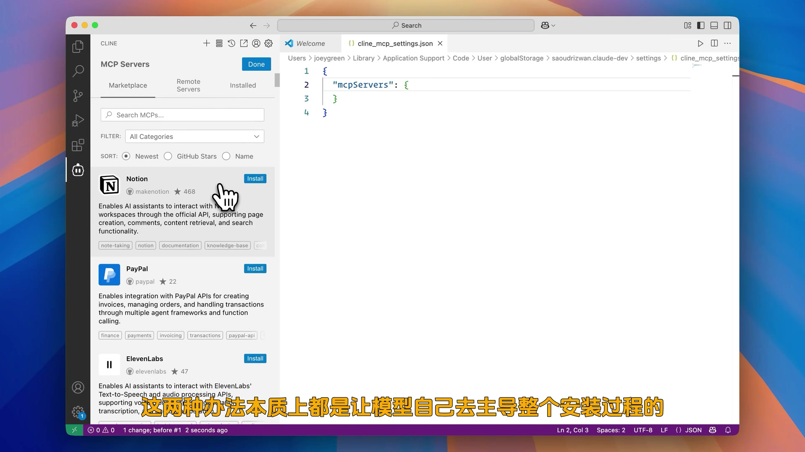
不过，不管是在聊天界面里让它去创建对应的 MCP Server，还是在应用市场里面让它去安装 MCP Server，这两种办法本质上都是让模型自己去主导整个安装过程的。
所以这里教你一种更加通用、确定性更高的办法：手动配置。
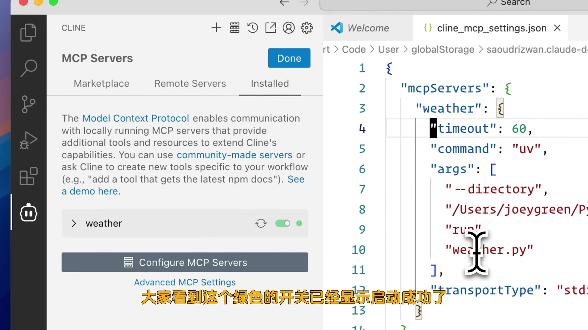
点击 Cline 的 Install，然后点击 Configure MCP servers，之后 Cline 就会给我们打开一个文件。这个文件是 JSON 格式的。如果我们想新增一个 MCP Server 的话，只需要在里面填入对应的启动命令就行了。
| 字段 | 说明 |
|---|---|
| 名字 | MCP Server 的名字，如 "weather" |
| disabled | 是否被禁用（去掉后默认启动） |
| timeout | 连接超时时间（秒），默认 60 |
| command | 用哪个程序运行这个 MCP Server（如 uv、npx） |
| args | 对应的参数 |
| transportType | 与 Cline 沟通的方式（STDIO 或 SSE） |
我们刚才填上的这个 MCP Server，它内部包含了两个 Tool：
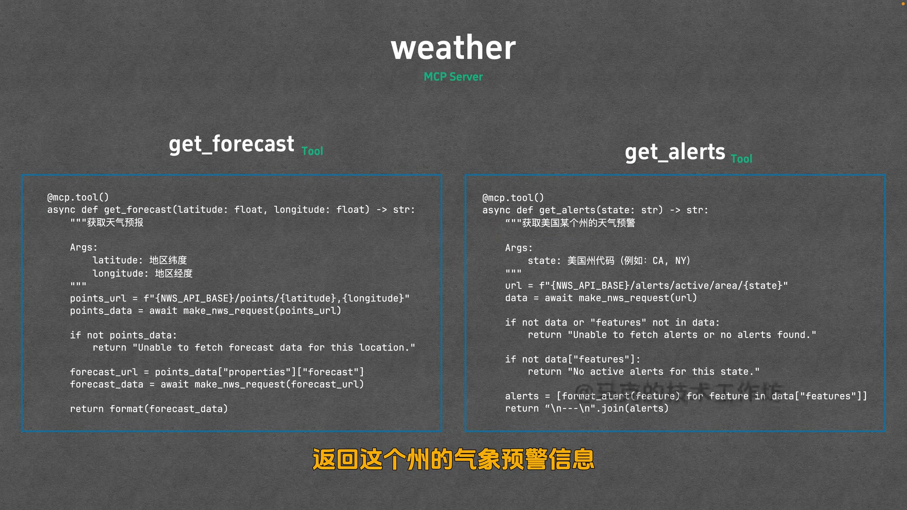
这两个 Tool 背后调用的 API 都是美国气象局提供的，所以目前只有美国的数据。不过我们测试还是需要它们的。
成功查询纽约天气
配置好之后，我们回到 Cline 这里，确认一下我们已经开启了这个 MCP Server。然后我们再问问 Cline 相同的问题：明天纽约的天气怎么样？
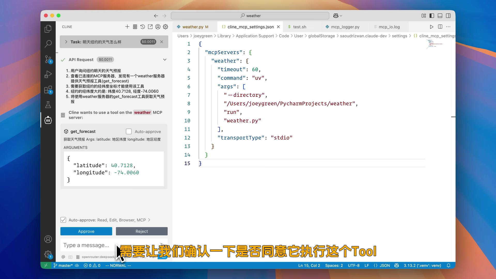
可以看到 Cline 确实是发现了 weather 这个 MCP Server，而且也发现了其中的 GetForecast Tool 是可以解决我们的问题的。它帮我们填入了纽约的经纬度信息，需要让我们确认一下是否同意它执行这个 Tool。
我们点击 Proceed。可以看到调用已经完成了，它拿到了未来几天的天气信息。这个时候模型会总结给出一个符合我们问题的答案。
它把纽约明天（4月14号）的天气信息都总结出来了，包括白天、夜间以及相关的建议。可以看出效果还是不错的。
Client ↔ Server 通信的完整流程
我们刚才配置了一个 MCP Server 并且使用了它。不过到底内部发生了什么呢？我来给大家画个图，大家就明白了。
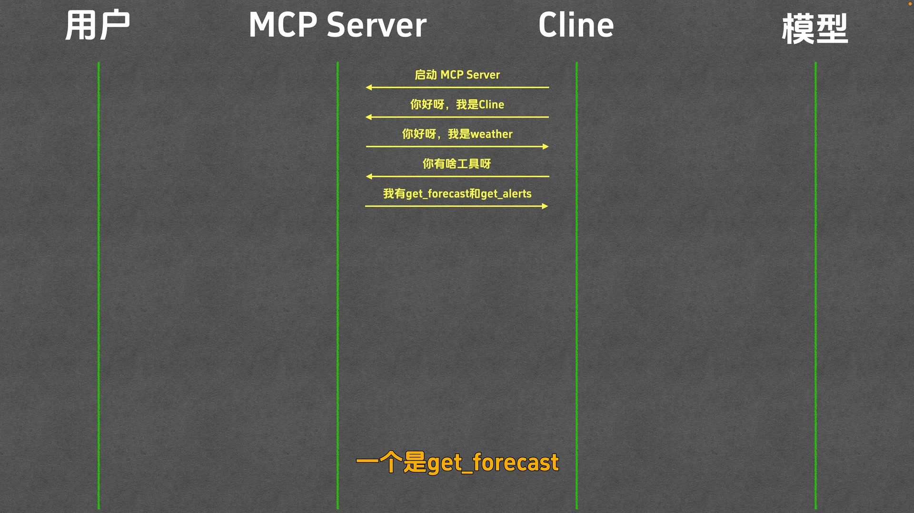
第一步：注册
我们用 JSON 配置好一个 MCP Server 并且保存之后，Cline 就会使用配置中的命令去执行这个程序。执行了之后，这个程序就会等待 Cline 指令。
Cline 记住了 MCP Server 的回答，因为后面可能会用到。到此为止，MCP Server 的注册就结束了。这些事情都发生在开启这个 MCP Server 的一瞬间。
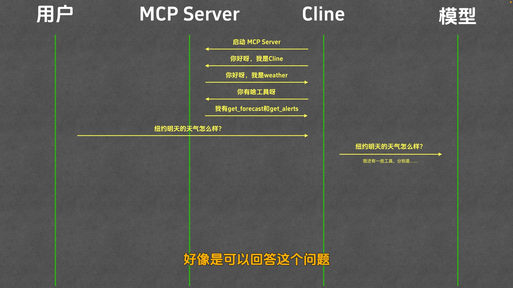
第二步：调用
然后我们不是问问题了吗——纽约明天的天气怎么样？Cline 拿到问题之后，把这个问题传给模型，让它解答。
与往常不同的是，Cline 发给模型的除了用户问题，还有注册好的 MCP Server 以及每个 MCP Server 所包含的 Tool 列表。Cline 告诉模型："这些 Tool 可能会帮助你解决用户的问题，需要调哪个跟我说，我来帮你调。"
模型一看："用户的问题我回答不了，我哪知道纽约明天的天气，我的知识到去年12月就截止了。不过，Weather 这个 MCP Server 里面有个叫做 GetForecast 的 Tool，好像是可以回答这个问题。要不就让 Cline 调用一下这个 Tool 试试。"
因此模型告诉 Cline："我要调用 GetForecast 的这个 Tool，参数是北纬40度，西经74度。"
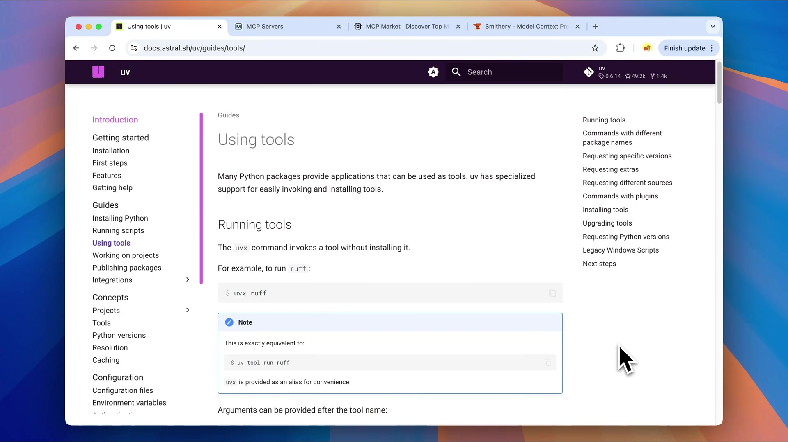
第三步：返回
Cline 拿到模型的请求之后，紧接着就跟 Weather 这个 MCP Server 沟通："你不是说你有 GetForecast 的这个 Tool 吗？那给我调一下，参数是北纬40度，西经74度。"
Weather 接收到 Cline 的请求之后，用指定的参数调用了 GetForecast 的这个函数，拿到了结果，并且把它传给了 Cline。
Cline 既然把结果再传回给了模型，告诉它："你要的 Tool 结果到了。"
模型接到后，根据结果回答了用户问题，并且把它的答案发回给了 Cline。
Cline 把结果再发回给用户。这个就是我们最终看到的那个结果了。
uvx 和 npx 两种启动方式
前面我们说的 MCP Server 是我仿照官方示例写的。那如何使用别人写的呢？在哪里能找到别人写的 MCP Server 呢？
目前有很多 MCP Server 市场，比如：
MCP Server 大多是使用 Python 或者 Node 进行编写的，对应的启动程序一般是 uvx 或者 npx。对于这两种启动方式，我们分别举一个例子，其他的大家举一反三就好了。
uvx 是 uv tool run 这个命令的缩写，代表使用 uv 来运行一个 tool。
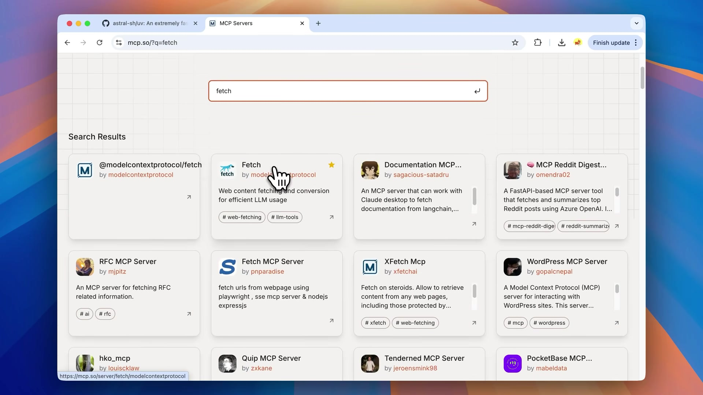
uvx cowsay 这个命令就可以用来安装并且启动 cowsay 这个程序。uvx 会帮你把 cowsay 需要的依赖、执行环境全部都配置好，不需要你自己去处理。
使用 uvx 之前，我们需要安装它。大家可以去 uv 的 GitHub 仓库找到对应的安装命令。
接下来我们使用 fetch 这个 MCP Server 给大家演示一下。fetch 是用来抓取网页内容的，它是用 uvx 来启动的，符合我们的场景。
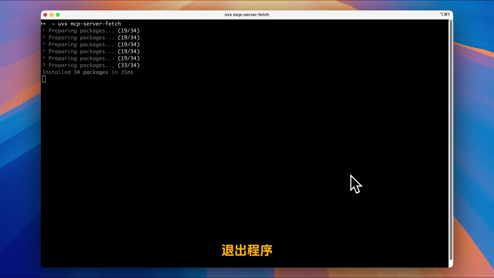
安装好之后，我们不妨来试一试。首先我们打开一个新的会话，输入我们的问题："请抓取下面这个网页的内容，并将其转换为 Markdown 格式后放到下面目录里面的 guys.md 文件中。"然后我就给了一个 URL。
可以发现 Cline 确实是找到了我们的 fetch MCP Server，并且开始提取参数准备调用。它现在已经拼接好工具的调用参数了，正在征求我们同意。我们点击 Apply。
可以看出它已经成功地使用 fetch MCP Server 获取到了网页的内容。它下面就开始把这个网页的内容转换成 Markdown 并且写入到我所规定的 guys.md 文件中。不错，Cline 已经完成了我们的任务，而且整个过程非常丝滑，没有出现一点问题。
npx 跟 uvx 类似，也是可以自动下载并且安装程序，只不过 uvx 安装的是 Python 程序，而 npx 安装的是 Node 的程序。
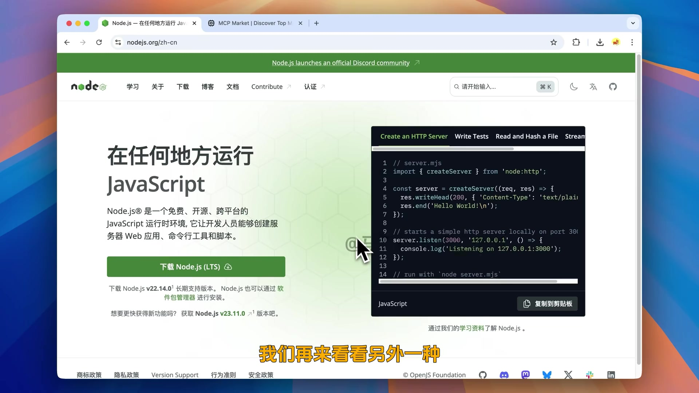
由于 npx 是 Node 的一部分，所以我们直接安装 Node.js 就可以了。大家打开 Node.js 的官方网站，点击这里的 Download Node.js 进行安装就行了。
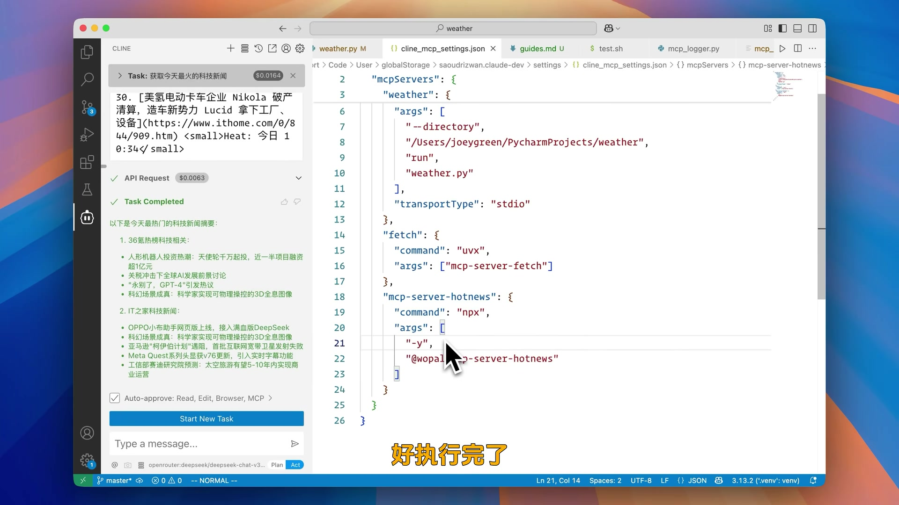
安装好了之后，我们打开 mcpmarket 这样的一个网站，在里面搜索一个 MCP Server 叫做 hotnews。这个 MCP Server 是用来给我们拉取新闻的。
如果想要使用它的话，我们需要选中 MCP Server 配置里面的对应部分，复制然后来到 Cline 这边，点击这里的 Configure MCP servers，然后粘贴。粘贴好了之后，Cline 就会给我们加载上这个 MCP Server 了。
同之前一样，如果说你的加载过程非常长以至于超时的话，你可以把这里的命令放到终端里面去执行，让它提前下载完。然后再跑到 Cline 这边再加载一次。
既然安装完了，我们就不妨来试一试。首先先建一个对话，然后我们给它问题。看来 Cline 是发现了我们刚安装的这个 MCP 服务器，并且找到了一个合适的工具，在征求我们的同意，看看是否能运行这个工具。我们点击 Proceed。
好，执行完了。而且模型给我们总结一下，这样的话我们就拿到了最终的结果了。
这个 npx 安装的 MCP Server 我们也演示完了。除了 uvx 和 npx 之外，可能还会有一些别的安装方式，比如 bunx 或者是直接使用 Node 启动。大家仔细看看 MCP Server 对应的安装文档，都能解决。这里我就不再赘述了。
把整期视频压缩成一张表
| 问题 | 结论 |
|---|---|
| MCP 是什么？ | Model Context Protocol，让大模型能够使用外部工具的协议 |
| MCP Host 是什么？ | 支持 MCP 协议的软件，如 Claude Desktop、Cursor、Cline、Cherry Studio |
| MCP Server 是真正的服务器吗？ | 不是。它就是一个本地程序，只不过执行符合 MCP 协议 |
| Tool 是什么？ | MCP Server 内置的功能模块，本质上就是函数 |
| 如何配置 MCP Server？ | 在 Cline 中打开 JSON 配置文件，填入 command 和 args |
| TransportType 有哪些？ | STDIO（标准输入输出，主流）和 SSE（Server-Sent Events，少用） |
| uvx 是什么？ | uv tool run 的缩写，用来运行 Python 程序 |
| npx 是什么？ | Node.js 的包管理工具，用来运行 Node 程序 |
| 加载超时怎么办？ | 先把命令放到终端执行一遍，让程序提前下载好，再回 Cline 加载 |
| MCP 交互流程是什么？ | 用户提问 → Cline 转发给模型（附带 Tool 列表）→ 模型决定调用 → Cline 调用 Server → Server 返回结果 → 模型总结 → 返回用户 |
视频中的关键概念
| 术语 | 英文 | 解释 |
|---|---|---|
| MCP | Model Context Protocol | 模型上下文协议，让大模型能够使用外部工具 |
| MCP Host | MCP Host | 支持 MCP 协议的软件，如 Cline、Cursor |
| MCP Server | MCP Server | 提供 Tool 的程序，不是真正的服务器 |
| Tool | Tool | MCP Server 内置的功能模块，本质是函数 |
| Cline | Cline | VSCode 的 MCP Host 插件 |
| OpenRouter | OpenRouter | 提供多种模型 API 的平台 |
| STDIO | Standard Input/Output | 标准输入输出，MCP 的主流通信方式 |
| SSE | Server-Sent Events | 另一种通信方式，用得比较少 |
| uvx | uv tool run | 用来运行 Python 程序的工具 |
| npx | Node Package Execute | 用来运行 Node.js 程序的工具 |
| uv | uv | Python 的包管理软件 |